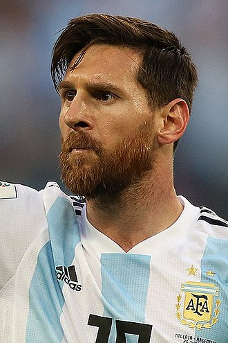

Биография Лионеля Месси

Лионе́ль Андре́с Ме́сси Куччитти́ни (исп. Lionel Andrés Messi Cuccittini, испанское произношение: [ljoˈnel anˈdɾez ˈmesi] (Звук слушать); род. 24 июня 1987, Росарио, Аргентина)[7][8][9][10] — аргентинский футболист, нападающий и капитан испанского клуба «Барселона», с 2011 года — капитан национальной сборной Аргентины[11]. Лучший бомбардир в истории «Барселоны» и сборной Аргентины. Признаётся специалистами одним из лучших футболистов современности и одним из лучшиx игроков всех времён[12][13][14][15][16][17][18].
Воспитанник футбольной академии «Барселоны», в составе первой команды выступает с 17 лет. С теx пор вместе с клубом он выиграл десять титулов чемпиона Испании, четыре Лиги чемпионов УЕФА, шесть Кубков Испании, восемь Суперкубков Испании, три Суперкубка Европы и три чемпионата мира среди клубов. Шесть раз становился лучшим бомбардиром Лиги чемпионов УЕФА и семь раз — чемпионата Испании.
В 2005, 2007—2013, 2015—2017 и 2019 годах был признан лучшим игроком года в Аргентине, десять последниx наград вручались как лучшему аргентинцу за рубежом[19][20]. В 2009, 2010, 2011, 2015, 2017, 2018 и 2019 годах был признан лучшим игроком чемпионата Испании. В 2009 году был признан лучшим футболистом года в клубном европейском футболе по версии УЕФА и лучшим нападающим Лиги чемпионов УЕФА. В том же году получил «Золотой мяч» как лучший футболист Европы и «Бриллиантовый мяч» как лучший футболист мира по версии ФИФА. Лучший футболист мира 2010 года (первый обладатель «Золотого мяча ФИФА», объединённого приза от «France Football» и ФИФА). В 2011 году стал лучшим игроком Европы (первый обладатель приза лучшему футболисту года в Европе). Шестикратный обладатель «Золотой бутсы» (2010, 2012, 2013, 2017, 2018, 2019).
В марте 2012 году установил рекорд результативности во всех официальных матчах за «Барселону» — 234 забитых мяча. Также в сезоне 2011/12 установил рекорд результативности для чемпионата Испании — 50 голов за сезон[21]. В марте 2014 года побил 87-летний рекорд по количеству забитых голов в истории «Барселоны», доведя свой бомбардирский счёт до 371 гола[22]. 22 ноября 2014 года побил рекорд по количеству голов в чемпионате Испании — 251 забитый мяч, державшийся 59 лет. 25 ноября 2014 года побил рекорд результативности в Лиге чемпионов — 71 забитый мяч. В апреле 2017 года в возрасте 29 лет забил 500-й гол за «Барселону» в официальных матчах и стал единственным игроком в истории испанского футбола, преодолевшим эту отметку за один клуб. Лучший бомбардир в истории «Эль-Класико» и «каталонского дерби».
В 2005 году дебютировал за сборную Аргентины. Является самым молодым игроком, забившим гол за «альбиселесте» на чемпионате мира. В составе молодёжной сборной стал чемпионом мира 2005 года (лучший игрок и лучший бомбардир турнира) и олимпийским чемпионом 2008 года. В составе национальной сборной — серебряный призёр чемпионата мира 2014 года (лучший игрок турнира). Входит в состав символической сборной Аргентины всех времён.
Карьера

Лионель Месси начал играть в футбол в очень раннем возрасте за клуб своего города «Ньюэллс Олд Бойз»[35]. В возрасте 11 лет он переехал с родителями в Барселону, где уже в 13 лет оказался в молодёжной команде «Барселоны» и в своём первом же матче оформил «покер», а всего за сезон забив 37 мячей в 30 матчах[36]. Месси быстро нашёл свою игру и стал часто появляться в стартовом составе второй команды, в среднем забивая мяч за игру. В возрасте 16 лет игру Лионеля заметил Фабио Капелло; он предложил главному тренеру команды, Франку Райкаарду, взять Месси в аренду на сезон в «Ювентус», но голландец отказался[37]. Дебютировал Месси за основной состав 17 ноября 2003 года в товарищеской игре против «Порту».
Сборная Аргентины

До своего дебюта в молодёжной команде Аргентины Месси получил приглашение выступать за национальную сборную Испании, но отклонил его[160]. В июне 2004 года он наконец дебютировал в товарищеском матче против Парагвая за молодёжную сборную Аргентины. В июне 2005 Месси выиграл молодёжный чемпионат мира, проходивший на полях Нидерландов. На этом турнире он стал лучшим бомбардиром, забив 6 мячей, и получил «Золотой мяч» в качестве лучшего игрока чемпионата.
Личная жизнь

Месси некоторое время встречался с Макареной Лемос, молодой аргентинкой из его родного города Росарио. Месси и Лемос встречались в период проведения чемпионата мира в Германии[205]. В прошлом он также состоял в отношениях с аргентинской моделью Лусианой Саласар[206]. В январе 2009 года на передаче «Hat Trick Barca», программе на Канале 33, он сказал: «У меня есть подруга, и она живёт в Аргентине, и я счастлив с ней». При этом он был замечен с девушкой, Антонеллой Рокуццо, на карнавале в Ситжесе после дерби «Барселона» — «Эспаньол» (Рокуццо — также из того же города Росарио)[206]. Месси является крёстным отцом Бенхамина Агуэро — сына Серхио Агуэро[207]. Месси является лицом видеоигр Pro Evolution Soccer 2009, Pro Evolution Soccer 2010 (наряду с Фернандо Торресом), Pro Evolution Soccer 2011, также вовлечён в рекламные кампании этой игры. Также он является лицом компаний: Adidas, Storkman, A-Style, Mirage, el Banco Sabadell, YPF, MasterCard, Garbarino, Xbox, McDonald’s, Danone, Pepsi, Movistar.
Также Лионель Месси является международным послом доброй воли организации ЮНИСЕФ. 6 февраля 2012 года журнал Time разместил на обложке номера издания портрет Лионеля Месси. Впервые в истории журнала на обложке появился один футболист. Ранее Time размещал фотографии других игроков, но в коллаже[208]. 16 мая 2012 года издательство Electronic Arts подтвердило что на обложке игры FIFA 13 будет изображён Лионель Месси. Месси принял участие в разработке новой системы дриблинга[209]. В мае 2012 года Месси предложил полностью оплачивать лечение 6-летнего марокканца Валида Кашаша, который хотел стать футболистом, но не мог этого сделать из-за дефицита гормона роста[210]. 2 ноября 2012 года у Лионеля и Антонеллы в больнице Барселоны родился сын Тьяго[211]. 11 сентября 2015 года у пары родился второй сын — Матео. 10 марта 2018 года родился сын Чиро[212]. В январе 2013 года Месси пожертвовал 152 тыс. евро на реконструкцию спортивного центра в Росарио[213]. В 2013 году японский дизайнер Гинзо Танака представил копию ступни Месси, полностью сделанную из золота. Её вес — 25 кг, стоимость — 5,25 млн долларов США. Произведение искусства японца задумано, чтобы увековечить рекорды Месси, которые футболист установил в 2012 году. На продажу были выставлены также миниатюры[214].
1 января 2015 года в Испании вышел документальный фильм «Месси», посвящённый жизни и карьере Лионеля, который был снят испанским режиссёром Алексом де ла Иглесиа[215]. 8 июня 2016 года в Буэнос-Айресе (Аргентина) Лионелю Месси установили монумент[216]. 16 мая 2019 года в Барселоне Месси наградили одной из высших наград правительства Каталонии — Крестом Сант-Жорди за помощь в строительстве детского онкологического центра[217]. Однажды главный тренер сборной Аргентины Алехандро Сабелья сказал, что для описания игры Месси нужно отдельное слово. Компания Pepsi, которая много лет сотрудничает с Месси, запустила в социальных сетях кампанию с призывом придумать прилагательное, описывающее игру Месси. В феврале 2013 года в испанский словарь «Santillana» вошло прилагательное inmessionante, образованное от фамилии Месси. Новое слово имеет два значения: 1) стиль игры Месси, безграничная способность к самосовершенствованию 2) описание лучшего футболиста всех времён[218].